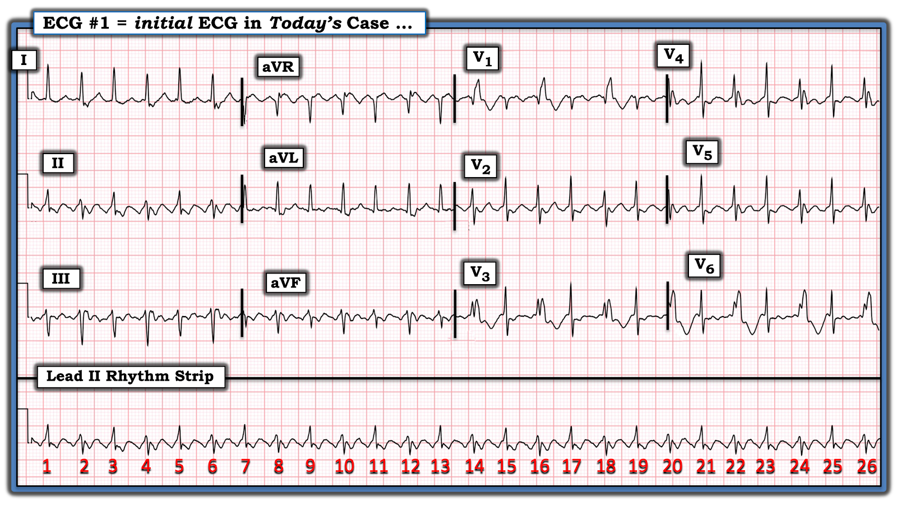
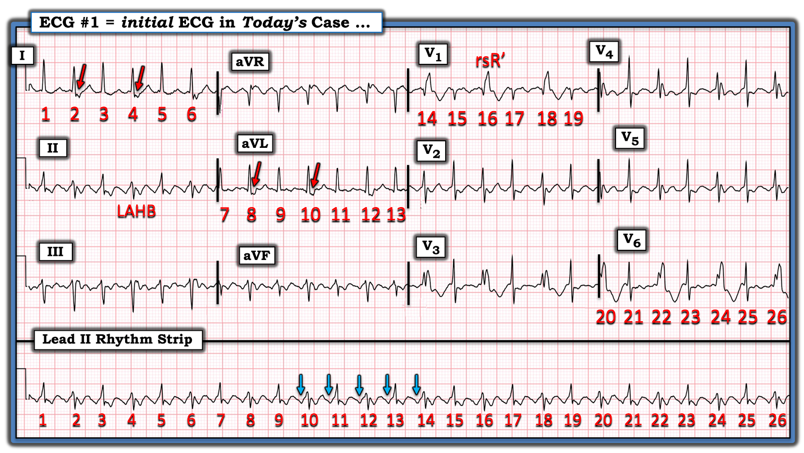
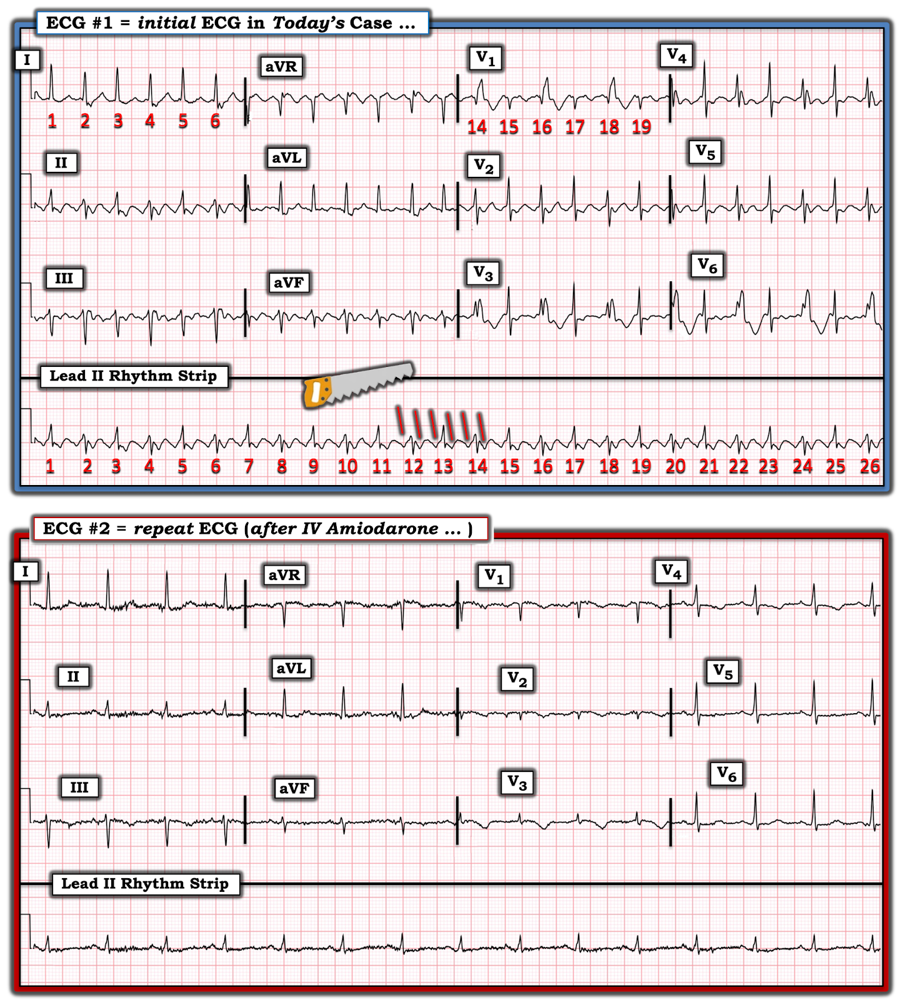
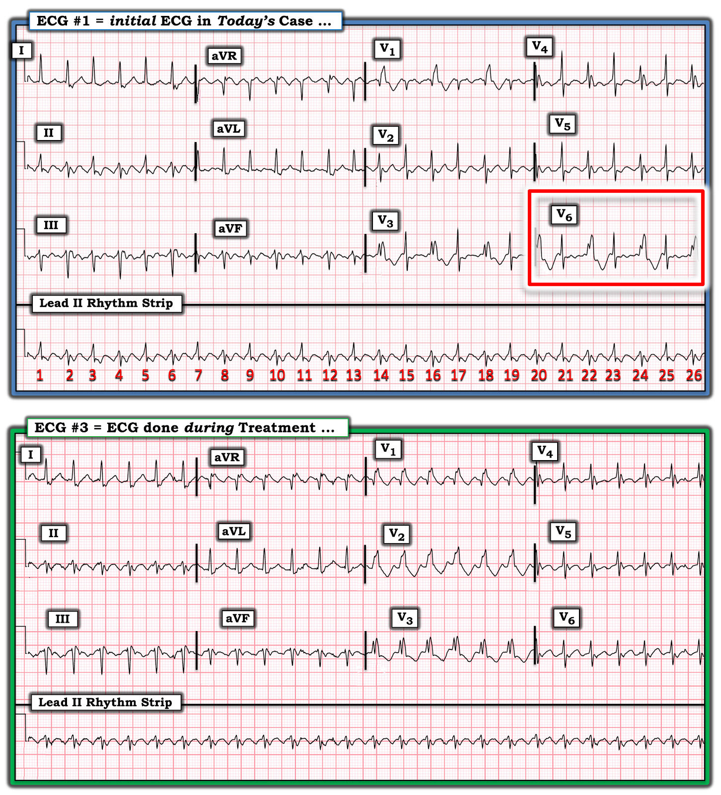
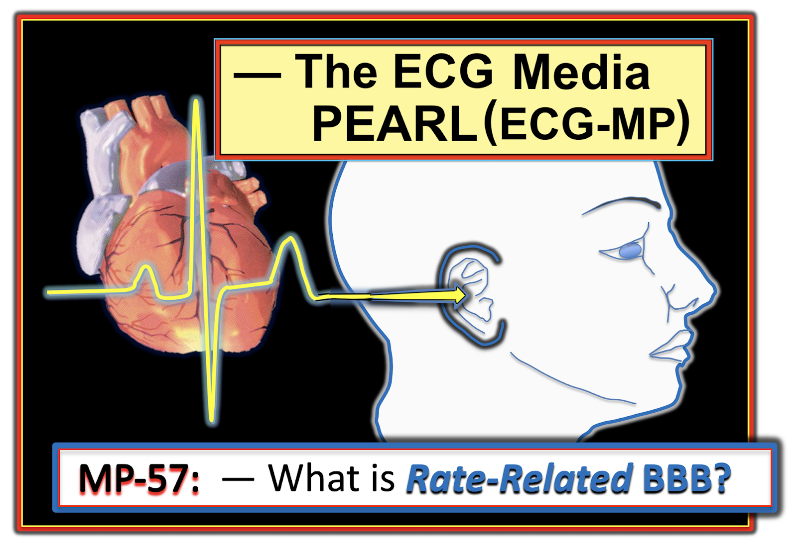

ECG Blog #409 — Cách một nhát ...
Điện tâm đồ trong Hình 1 — được ghi ở một bệnh nhân hồi hộp đánh trống ngực. Bệnh nhân ổn định huyết động trong khi có nhịp này.
CÂU HỎI:
- Nhịp trong Hình 1 là nhịp gì?
- — Bạn chắc chắn đến mức nào về câu trả lời của mình?
- — Vì sao hình dạng QRS thay đổi?


Diễn giải của tôi về điện tâm đồ trong Hình 1:
Vì bệnh nhân đang ổn định huyết động — có thời gian để đánh giá nhịp một cách hệ thống. Theo Cách tiếp cận Ps, Qs, 3R (Xem ECG Blog #185):
- Nhịp nhanh và các phức bộ QRS đều (Regular). Vì khoảng R-R chỉ ngắn hơn 2 ô lớn một chút — tôi ước tính tần số (Rate) thất hơi trên 150/phút.
- Hình dạng QRS thay đổi cách một nhát! Điều này có lẽ thấy rõ nhất ở chuyển đạo V1 (nhưng cũng thấy rõ ở các chuyển đạo V3,V4,V6). QRS hẹp ở các nhát số lẻ (nhưng QRS rộng ở các nhát số chẵn).
- Sóng P xoang dường như vắng mặt — vì chúng ta không thấy sóng P dương rõ nét ở chuyển đạo II. Thay vào đó — một sóng lệch âm dường như đi trước mỗi phức bộ QRS ở chuyển đạo II (và chúng ta có thể thấy sóng lệch âm này phía trước từng nhát trong 26 nhát trên dải nhịp chuyển đạo II dài).
- ĐIỂM THEN CHỐT (PEARL) #1: Mặc dù chúng ta biết các sóng lệch âm phía trước QRS này không phải là sóng P xoang (vì, như đã nêu ở trên — các sóng lệch này không dương ở chuyển đạo II) — quả thật dường như có một khoảng (khoảng cách) cố định giữa các sóng lệch âm này và phức bộ QRS đi sau. Điều này gợi ý rằng các sóng lệch âm này đại diện cho một dạng khác của hoạt động nhĩ (mà theo thông số thứ 5 trong Cách tiếp cận Ps,Qs,3R) — có liên quan (Related) với các phức bộ QRS lân cận.
Tổng Hợp Lại Tất cả:
Theo Cách tiếp cận Ps, Qs, 3R — Chúng ta đã xác định rằng nhịp trong Hình 1 biểu hiện các phức bộ QRS đều với tần số hơi trên 150/phút — kèm một dạng hoạt động nhĩ nào đó có liên quan với các phức bộ QRS lân cận.
- Nhưng VÌ SAO hình dạng QRS lại thay đổi cách một nhát? (tức là, hẹp ở một nhát — rồi trở nên rộng ở nhát kế tiếp)?
- — Nhịp trong Hình 1 có phải là nhịp trên thất không?
- — Loại hoạt động nhĩ nào có khả năng hiện diện?
ĐIỂM THEN CHỐT #2: Điều cân nhắc ban đầu hiển nhiên mỗi khi chúng ta thấy các nhát rộng — là căn nguyên của những nhát đó có thể là từ thất. Dù vậy (theo ĐIỂM THEN CHỐT #1) — việc mỗi nhát trong 26 nhát trên dải nhịp chuyển đạo II dài ở Hình 1 đều có một sóng lệch âm đi trước, với khoảng cố định giữa sóng lệch âm này và phức bộ QRS đi sau (các mũi tên XANH ở chuyển đạo II dài trong Hình 2) — là điểm chống lại việc các nhát rộng này có căn nguyên từ thất.
- NẾU các nhát rộng là từ thất — chúng ta sẽ không kỳ vọng khoảng tính từ sóng lệch âm đi trước mỗi QRS lại bằng nhau.
- Thay vào đó — việc khoảng tính từ sóng lệch âm đi trước mỗi nhát trong 26 nhát trên dải nhịp chuyển đạo II dài luôn hằng định — gợi ý rằng mỗi nhát trong 26 nhát này đều được dẫn truyền bởi chính dạng hoạt động nhĩ mà các sóng lệch âm này đại diện, dù đó là dạng nào.
ĐIỂM THEN CHỐT #3: Hình dạng QRS của các nhát rộng ủng hộ mạnh mẽ giả định của chúng ta rằng cả 26 nhát trên điện tâm đồ ban đầu hôm nay đều là nhát trên thất! (Hình 2).
- Hình dạng QRS của các nhát #14,16,18 ở chuyển đạo V1 phù hợp với dẫn truyền kiểu RBBB (blốc nhánh phải — Right Bundle Branch Block) — vì có hình dạng rsR’, với sóng S đi xuống dưới đường nền và sóng R’ cao hơn (sóng lệch “tai thỏ” bên phải cao hơn).
- Hình dạng QRS của các nhát #2,4,6 ở chuyển đạo I — và các nhát #8,10,12 ở chuyển đạo aVL ủng hộ dẫn truyền RBBB — vì mỗi chuyển đạo bên này đều biểu hiện sóng R dương, mảnh, kèm sóng S tận rộng (các mũi tên ĐỎ ở những chuyển đạo này).
- Cuối cùng (như minh họa ở Hình 2) — Lưu ý rằng các nhát rộng ở các chuyển đạo dưới (đặc biệt ở chuyển đạo II) biểu hiện trục lệch trái rõ rệt hơn, phù hợp với dẫn truyền lệch hướng kiểu LAHB (blốc phân nhánh trái trước — Left Anterior HemiBlock) — đây lại thêm một gợi ý rằng mọi nhát rộng đều là nhát trên thất!


ĐIỂM THEN CHỐT #4: Như đã nhấn mạnh trong ECG Blog #204, bài tôi ôn lại cách suy ra hình ảnh các blốc nhánh — RBBB là một chậm dẫn truyền phần cuối (terminal). Ý tôi là các vectơ khử cực thất ban đầu diễn ra bình thường khi có RBBB — và chỉ phần cuối của quá trình khử cực thất bị thay đổi với rối loạn dẫn truyền này.
- Kết quả là — IVS (vách liên thất — InterVentricular Septum) và LV (thất trái — Left Ventricle) khử cực bình thường khi dẫn truyền RBBB — và chỉ sau khi LV đã khử cực thì RV (thất phải — Right Ventricle) mới khử cực qua dẫn truyền chậm xuyên qua cơ thất (do có "blốc" ở nhánh phải). Điều này khiến phần khử cực cuối cùng hướng về phía RV “bị blốc” — tạo nên sóng S tận, rộng ở các chuyển đạo phía trái (sóng S này rộng khi RBBB hoàn toàn — vì dẫn truyền qua cơ tim chậm).
- Điểm MẤU CHỐT: Nhận thức rằng RBBB là một chậm dẫn truyền phần cuối, với các vectơ khử cực thất ban đầu vẫn bình thường — có thể cho thêm một manh mối rằng các phức bộ QRS giãn rộng là những nhát trên thất dẫn truyền lệch hướng. Khái niệm này có lẽ được minh họa rõ nhất ở các nhát rộng tại chuyển đạo V1 của Hình 2 — trong đó hình dạng và độ dốc của sóng r nhỏ ban đầu, tiếp theo là nhánh đi xuống của sóng S ở chuyển đạo V1, trông giống hệt về hình dạng và độ dốc so với các sóng lệch khởi đầu của các nhát hẹp ở chuyển đạo này.
ĐIỂM THEN CHỐT nâng cao #5 ( = Vượt ra ngoài phần cốt lõi): BẠN có nhận thấy dường như có một “sự cố” kỹ thuật trên điện tâm đồ ban đầu hôm nay không — ở chỗ phức bộ QRS không trông như ta kỳ vọng với dẫn truyền RBBB đối với các nhát rộng ở chuyển đạo V6? (tức là, các nhát #20,22,24,26 ở chuyển đạo V6 trong Hình 2).
- Xin nhấn mạnh — rằng sự cố kỹ thuật này là một dấu hiệu cực kỳ tinh tế mà tôi đã không nhận ra khi lần đầu xem điện tâm đồ ban đầu trong ca hôm nay. Nhưng vì dẫn truyền RBBB là hậu quả của sự chậm trễ phần cuối trong tái cực thất — lẽ ra phải có sóng S tận, rộng ở các nhát rộng #20,22,24,26 tại chuyển đạo ngực bên V6. Thay vào đó, ở chuyển đạo V6 lại là một phức bộ QRS phân mảnh, dương hoàn toàn, không có bất kỳ sóng S tận nào.
- Giả thuyết của tôi: Tôi nghi ngờ rằng dây nối điện cực V6 có thể đã vô tình bị đảo với dây nối điện cực V4 hoặc V5.
===================
TIẾP THEO: Tổng Hợp Lại Tất cả:
Giờ đây, khi đã xác định cả 26 nhát trên điện tâm đồ ban đầu hôm nay đều là nhát trên thất — Chúng ta có thể suy ra như sau:
- Có dẫn truyền RBBB cách một nhát trong Hình 2. Đây là một dạng BBB liên quan tần số — trong đó tần số thất nhanh có thể không để đủ thời gian giữa các nhát cho nhánh phải hồi phục.
- Thông thường, BBB liên quan tần số gây giãn rộng QRS ở mọi nhát — nhưng đôi khi, dẫn truyền BBB có thể chỉ xảy ra cách một hoặc cứ mỗi ba nhát.
- Điều này có nghĩa là nhịp trên bản ghi ban đầu hôm nay — là một nhịp SVT (nhịp nhanh trên thất — SupraVentricular Tachycardia) đều với tần số ~150/phút, nhưng không có dấu hiệu rõ ràng của sóng P xoang. ĐIỂM THEN CHỐT #6 dưới đây ôn lại chẩn đoán phân biệt:
ĐIỂM THEN CHỐT #6: Như đã bàn trong ECG Blog #287 — Việc nhận ra nhịp trên bản ghi ban đầu hôm nay là một SVT đều không có dấu hiệu rõ ràng của sóng P xoang (tức là, không có sóng P dương chắc chắn ở chuyển đạo II) — nên khiến ta cân nhắc DANH SÁCH chẩn đoán phân biệt sau đây:
- i) Nhịp nhanh xoang (NẾU có khả năng sóng P xoang đang ẩn trong sóng ST-T đi trước);
- ii) Một SVT vào lại (hoặc AVNRT nếu vòng vào lại nằm gọn trong nút AV — hoặc AVRT nếu có sự tham gia của một AP [đường phụ — Accessory Pathway] nằm ngoài nút AV);
- iii) Nhịp nhanh nhĩ (ATach);
- iv) Cuồng nhĩ (AFlutter) với dẫn truyền AV 2:1.
ĐIỂM THEN CHỐT #7: Hơn hẳn mọi thứ khác (!) — thực thể hay bị bỏ sót nhất trong DANH SÁCH chẩn đoán phân biệt ở trên là AFlutter (cuồng nhĩ — Atrial Flutter) — đặc biệt khi tần số thất gần ~150/phút (như trong ca hôm nay) — và — khi dường như có các sóng lệch âm (thay vì sóng P dương) ở chuyển đạo II.
- Lý do tần số thất trong AFlutter chưa điều trị có xu hướng gần 150/phút — là vì tần số nhĩ của cuồng nhĩ ở bệnh nhân không dùng thuốc chống loạn nhịp (loại thuốc có thể làm giảm tần số cuồng ở nhĩ) — có xu hướng rất gần 300/phút ở người lớn (tức là, khoảng thường gặp ~250-350/phút).
- Vì đáp ứng thất thường gặp nhất với AFlutter chưa điều trị là dẫn truyền AV 2:1 — điều này tạo ra tần số thất chỉ nhanh BẰNG MỘT NỬA tần số cuồng ở nhĩ — và 300 ÷ 2 ~150/phút (khoảng thường gặp ~130-170/phút).
- Điểm MẤU CHỐT: Biết rằng rối loạn nhịp hay bị bỏ sót nhất là AFlutter — gợi ý rằng cách TỐT NHẤT để tránh bỏ sót chẩn đoán AFlutter đơn giản là NGHĨ ĐẾN AFlutter bất cứ khi nào bạn gặp một SVT đều với tần số gần 150/phút (mà bạn không thấy rõ sóng P xoang dương ở chuyển đạo II).
ĐIỂM THEN CHỐT #8: Dùng compa đo (calipers) giúp dễ tìm ra hình ảnh "răng cưa" (sawtooth) đặc trưng chẩn đoán của AFlutter. Khi tìm AFlutter — tôi chỉ việc đặt compa đo đúng bằng MỘT NỬA khoảng R-R — rồi tìm những chuyển đạo mà tôi có thể "dò bước" ra dẫn truyền 2:1.
- Tôi đã làm điều này ở Hình 3 — trong đó các đường ĐỎ xiên trên dải nhịp chuyển đạo II dài làm nổi bật các chỗ lõm âm của đường nền xuất hiện với tần số đúng gấp đôi tần số thất. Điều này tương ứng với tần số nhĩ ~300/phút (khoảng P-P ~1 ô lớn).
- Hình ảnh "răng cưa" của đường nền trong AFlutter được nhận ra rõ nhất khi lùi ra xa dải nhịp một chút. Hình ảnh này thấy rõ nhất ở các chuyển đạo dưới ( = chuyển đạo II,III,aVF). Các chuyển đạo khác thường biểu hiện hoạt động nhĩ 2:1 dễ nhận ra nhất — là chuyển đạo aVR, V1 và/hoặc V2 — vì vậy tôi ưu tiên kiểm tra 6 chuyển đạo này trước tiên mỗi khi tìm AFlutter.
- Về mặt sinh lý — hình ảnh AFlutter hay gặp nhất, gọi là AFlutter "điển hình" (Typical) — tạo ra các sóng lệch âm 2:1 thấy ở các chuyển đạo dưới (như thấy ở Hình 3) — là kết quả của sự quay CCW (ngược chiều kim đồng hồ — CounterClockWise) của một vòng vào lại cố định quanh vòng van ba lá và qua eo tĩnh mạch chủ–van ba lá (cavo-tricuspid isthmus).
- Đôi khi có thể gặp các hình ảnh AFlutter "không điển hình" (Atypical), trong đó chiều quay của đường vào lại quanh vòng van ba lá đổi thành CW (theo chiều kim đồng hồ — ClockWise) — khi đó có thể thấy các sóng lệch dương nhỏ hơn.
- Về lâm sàng: Điều trị ban đầu AFlutter là như nhau, bất kể chiều quay là CW hay CCW — nên sự phân biệt này không quan trọng đối với người làm cấp cứu (Cosio — Arrhythmia & EP Review 6(2):55-62, 2017). Điều cần nhớ là NẾU bạn xác định được hoạt động nhĩ 2:1 đều với tần số nhĩ gần 300/phút (với khoảng P-P ~1 ô lớn) — thì nhịp đó gần như chắc chắn là AFlutter.
Ca bệnh tiếp diễn:
Bệnh nhân được điều trị bằng Amiodarone tĩnh mạch — thuốc này (như minh họa ở Hình 3) đã chuyển thành công AFlutter về nhịp xoang bình thường.
- Mặc dù có nhiễu đường nền đáng kể trên điện tâm đồ #2 — vẫn thấy được các sóng P xoang dương, đều trên dải nhịp chuyển đạo II dài.
- RBBB không còn thấy nữa sau khi chuyển về nhịp xoang — điều này ủng hộ nghi ngờ của chúng ta rằng dẫn truyền RBBB từng lúc thấy cách một nhát trong cơn nhịp nhanh (ở Hình 1) là liên quan tần số.
- Lưu ý rằng hình dạng QRS sau khi chuyển về nhịp xoang rất giống hình dạng QRS của các nhát số lẻ trong cơn nhịp nhanh.
- Cũng lưu ý rằng sóng T đảo ngược mức độ nhẹ vẫn tồn tại sau khi chuyển về nhịp xoang (thấy ở chuyển đạo III; và ở V1 đến V4). Điều này nhiều khả năng phản ánh một hiệu ứng "trí nhớ" (memory) thoáng qua và lành tính (tức là, Không hiếm gặp — các bất thường ST-T không do thiếu máu cục bộ có thể thấy trong nhiều giờ hoặc thậm chí nhiều ngày sau một cơn nhịp nhanh bền bỉ).


Và một bản ghi cuối cùng ...
Như một khái niệm nâng cao cuối cùng — tôi bổ sung thêm một bản ghi ở Hình 4.
- Điện tâm đồ #3 được ghi trong quá trình điều trị AFlutter cho bệnh nhân này — vào khoảng cùng thời điểm ghi điện tâm đồ #1.
- Như tôi đã nêu trước đó ở ĐIỂM THEN CHỐT #5 nâng cao — việc thiếu sóng S tận rộng ở các nhát rộng tại chuyển đạo V6 của điện tâm đồ #1 là không hợp lý về mặt sinh lý, vì các nhát #20,22,24,26 được dẫn truyền lệch hướng kiểu RBBB (nằm trong hình chữ nhật ĐỎ ở Hình 4). Tôi đã nghi ngờ có một kiểu "sự cố kỹ thuật" liên quan đến dây nối điện cực.
- Tôi tin rằng điện tâm đồ #3, được ghi trong quá trình điều trị — ủng hộ giả thuyết của tôi. Lưu ý rằng thay vì dẫn truyền RBBB cách một nhát — dẫn truyền lệch hướng kiểu RBBB liên quan tần số được thấy ở mọi nhát trên điện tâm đồ #3 — và sóng S tận (dù là một sóng lệch có khía) quả thật được thấy ở chuyển đạo V6. Như dự đoán — các sóng S tận rộng được thấy ở các chuyển đạo bên khác trên điện tâm đồ #3 ( = ở chuyển đạo I và aVL).


==================================
Lời cảm ơn: Xin cảm ơn Chun-Hung Chen = 陳俊宏 (ở thành phố Đài Trung [Taichung City], Đài Loan) đã cung cấp ca bệnh và bản ghi này.
==================================
Các bài ECG Blog liên quan đến ca hôm nay:
- ECG Blog #205 — Ôn lại Cách tiếp cận hệ thống của tôi trong đọc điện tâm đồ 12 chuyển đạo.
- ECG Blog #185 — Ôn lại Cách tiếp cận Ps, Qs, 3R trong đọc nhịp.
- Xem ECG Blog #240 — để ôn lại cách đánh giá điện tâm đồ ở bệnh nhân có nhịp SVT đều (bao gồm phân biệt giữa các loại vào lại trong SVT).
- ECG Blog #287 — về một SVT đều hóa ra là AFlutter.
- Xem ECG Blog #250 — về một SVT đều kèm ST chênh xuống.
- ECG Blog #229 — ôn lại cách phân biệt AFlutter với ATach (và VÌ SAO AFlutter hay bị bỏ sót đến vậy).
- Bài đăng ngày 12 tháng 11 năm 2019 trên Dr. Smith's ECG Blog — trong đó tôi ôn lại cách tiếp cận của tôi với nhịp SVT đều.
- ECG Blog #210 — ôn lại Phương pháp Cách-Một-Nhát (Every-Other-Beat) để ước tính tần số tim khi nhịp rất nhanh.
- ECG Blog #220 — ôn lại DANH SÁCH #1: Các nguyên nhân gây WCT đều (và cách đánh giá tình trạng ổn định huyết động).
- ECG Blog #242 — Ôn lại BBB liên quan tần số.
- ECG Blog #32 — Thêm về BBB liên quan tần số.
- Bài đăng ngày 17 tháng 8 năm 2020 của tôi trên Dr. Smith's ECG Blog — trong đó tôi ôn lại hiện tượng BBB phụ thuộc nhịp chậm (đôi khi gọi là blốc "pha 4" (Phase 4) hoặc blốc "nghịch lý" (paradoxical)).
- ECG Blog #211 — Ôn lại VÌ SAO một số nhát đến sớm và một số nhịp SVT được dẫn truyền lệch hướng (và vì sao các nhát lệch hướng thường trông giống một dạng blốc dẫn truyền nào đó).
- ECG Blog #203 — ôn lại cách nhận biết các blốc phân nhánh trên điện tâm đồ.
- ECG Blog #204 và ECG Blog #282 — ôn lại cách nhận biết các blốc nhánh trên điện tâm đồ.

PHẦN BỔ SUNG (23/12/2023):
Tôi đã trình bày tài liệu này trước đây — nhưng nó đáng được nhắc lại để tham khảo. Những khái niệm này nên trở thành phản xạ tự động khi đánh giá bệnh nhân đến khám với nhịp SVT đều.


ECG Media PEARL #64 (10:50 phút Audio) — Ôn lại DANH SÁCH #2: Các nguyên nhân thường gặp của Nhịp SVT đều.
===================================

ECG Media PEARL #45 (10:00 phút Audio) — Vì sao Cuồng nhĩ (Atrial Flutter) lại hay bị bỏ sót đến vậy? Ôn lại các PEARL (điểm then chốt) về chẩn đoán AFlutter trên điện tâm đồ — và — Có gì "Mới"? trong lĩnh vực này, liên quan đến phân biệt giữa AFlutter với Nhịp nhanh nhĩ (29/5/2021).


ECG Media PEARL #57 (8:00 phút Audio) — Thế nào là Blốc nhánh liên quan tần số? Điều này khác với dẫn truyền "lệch hướng" (aberrant) như thế nào.